|
|
|
Browsing
Contact Us |
Campaigners |
Face to Face |
Tribune |
Interview |
News |
On the Web |
One Million |
Report
Farsi | Français | German | Italian | Spanish | العربية Also in this section
|

160 Human Rights Defenders Demand Release of Imprisoned Iranian WHRDs, Bahareh Hedayat and Maryam ShafiepourMonday 17 March 2014 Change for Equality: In a statement addressed to the Head of the Iranian Judiciary, Mr. Sadegh Amoli Larijani, 160 human rights activists from around the world have demanded the release of imprisoned woman human rights defenders Bahareh Hedayat and Maryam Shafiepour. This letter which was written in support of the Campaign “Ten Days with Bahareh Hedayat,” points out the obligations of the Iranian authorities in line with the UN General Assembly Resolution on Woman Human Rights Defenders, based on which WHRDs must not be persecuted because of their work in defense of human rights and that their work should be recognized as legitimate and legal measures to support and protect them should be adopted. Those signing the petition represented countries as diverse as Afghanistan, Kurdistan, Iraq, Libya, Egypt, Turkey, Japan, The Phillipinnes, Thialand, India, Pakistan, Senegal, Cambodia, Congo, South Africa, Norway, Lebanon, the UK, Canada, the USA and many more. Besides these individuals a number of organizaitons too have signed the letter, and their support of the demand to free these two Iranian WHRDs will be announced in the days to come through the Free Bahareh page on Facebook. The text of the letter appears below along with pictures of the signed statement. Please note that 24 out of 160 persons signed the statement via internet and their names have been added. The rest of the signatories signed the statement personally. Call on Iranian Authorities to Release and Protect Women Human Rights Defenders Bahareh Hedayat and Maryam Shafiepour The signatories of this statement call on the Iranian Judiciary to immediately and unconditionally release imprisoned woman human rights defenders Bahareh Hedayat serving a 10 year prison sentence in relation to her student and women’s rights activities and Maryam Shafiepour, who was sentenced to 7 years in relation to her student rights activities on March 2, 2014. These two activists are among at least 14 women in the women’s political prisoners ward at Tehran’s Evin Prison. In line with the General Assembly Resolution on Women Human Rights Defenders, we remind the Iranian government of its obligations to ensure that the protection of human rights are not criminalized or met with limitation in violation of their obligations and commitments under international human rights law and that women human rights defenders are not prevented from enjoying universal human rights owing to their work. We call on Mr. Sadegh Amoli Larijani, the head of the Judiciary, to take immediate steps to release Hedayat and other political prisoners based on recent amendments to Iran’s penal code. Under article 134, a person convicted of multiple charges may only receive the maximum penalty for their most serious charge, instead of a compounded sentence based on each individual charge. Article 134 also allows the judiciary to free Hedayat after she has served half her sentence. We further call on the head of the judiciary Mr. Sadegh Amoli Larijani, to take immediate steps to ensure that Iran’s judiciary release Shafiepour and dismiss the charges against her in appeals. In closing we urge the Iranian authorities to adopt legislation in line with international law and guarantees, which protects and facilitates the work of women human rights defenders in Iran. Background: Maryam Shafipour On March 2, a revolutionary court found Maryam Shafipour, a student rights activist, guilty of violating the country’s national security and sentenced her to seven years in prison. Shafipour, 27, was summoned to the Evin Prison prosecutor’s office on July 27, 2013, and then arrested. She had spent several years advocating for the rights of university students barred from higher education because of their activism and for the release of political prisoners, including the 2009 presidential candidate, Mehdi Karroubi, who is under house arrest. Branch 28 of Tehran’s revolutionary court convicted Shafipour of “propaganda against the state,” “assembly and collusion against the national security,” and “membership in an illegal group” that the source said was defending the rights of university students barred from education.
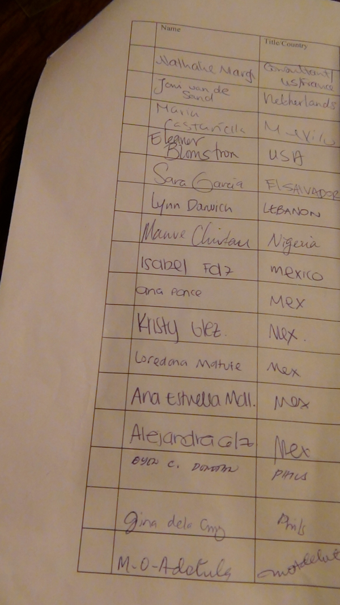
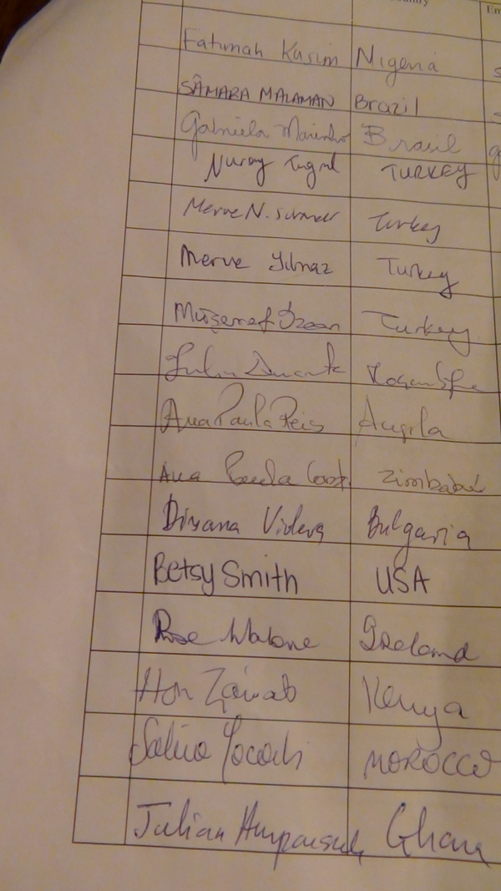
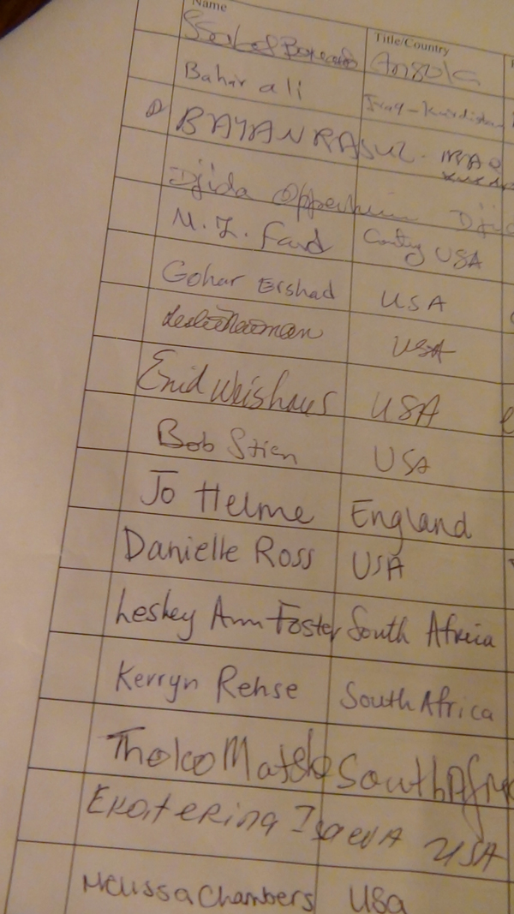
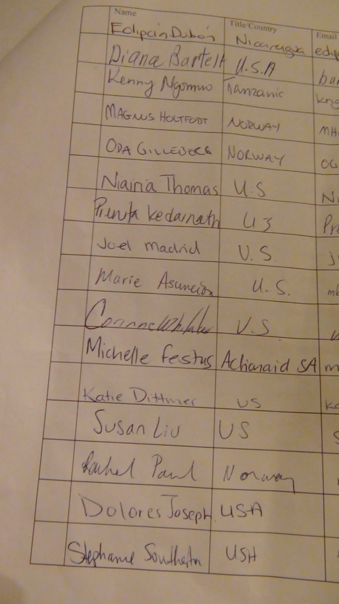
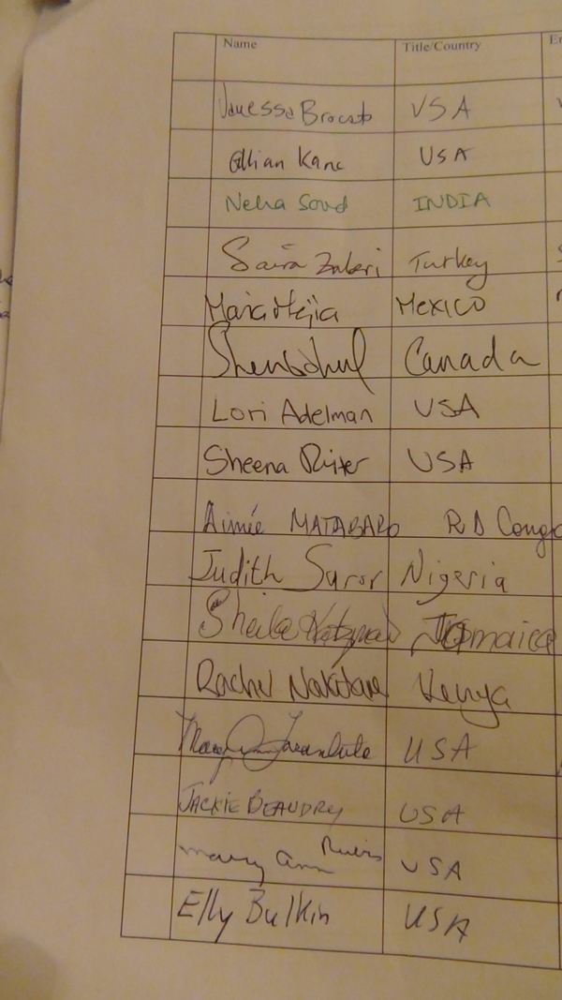
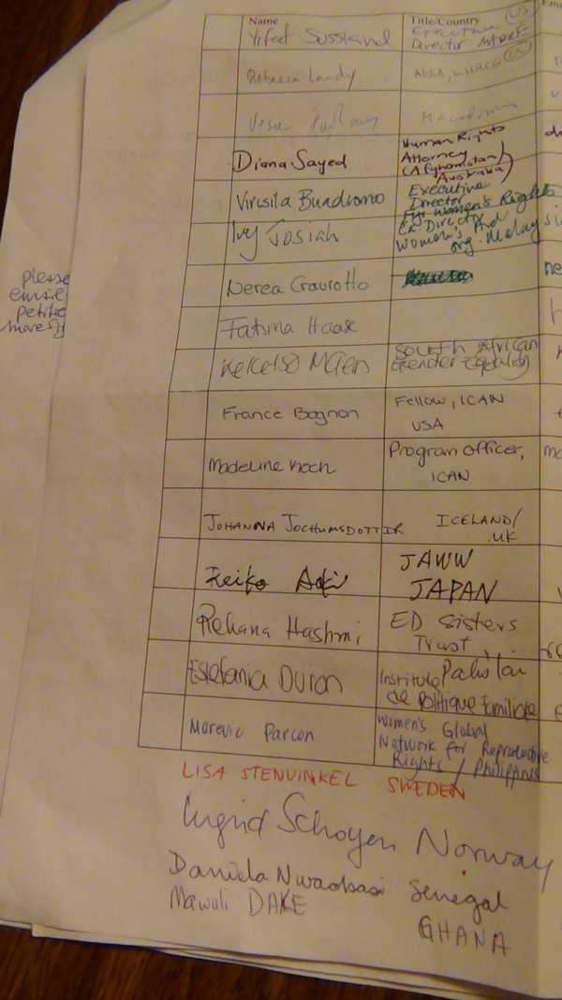
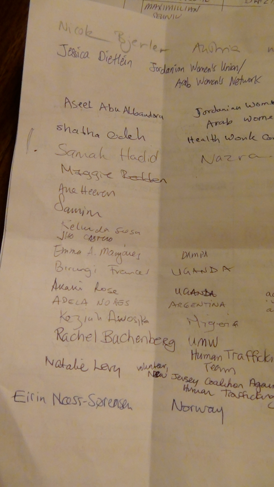
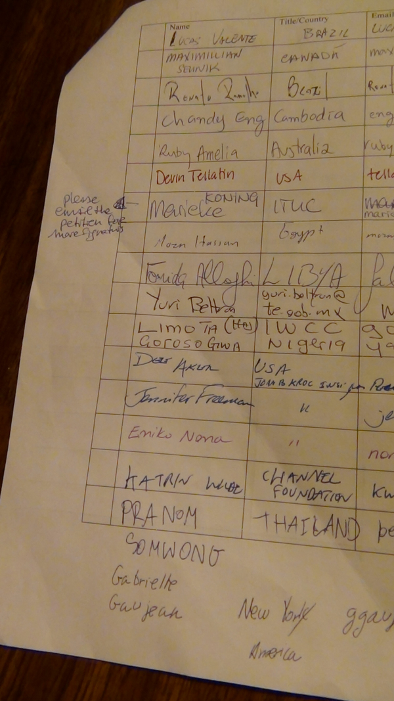
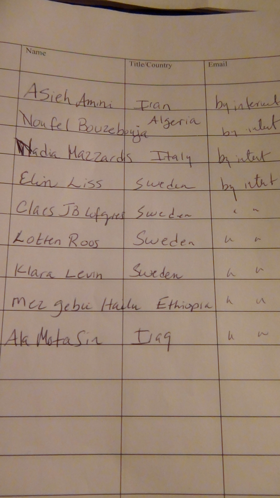
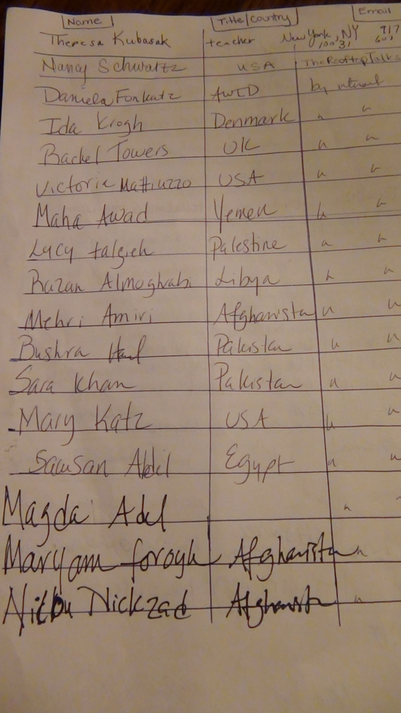
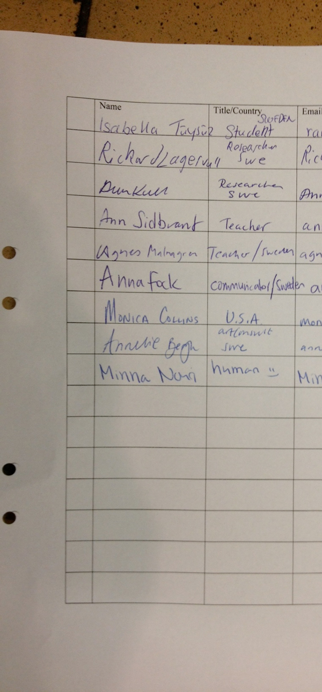 |